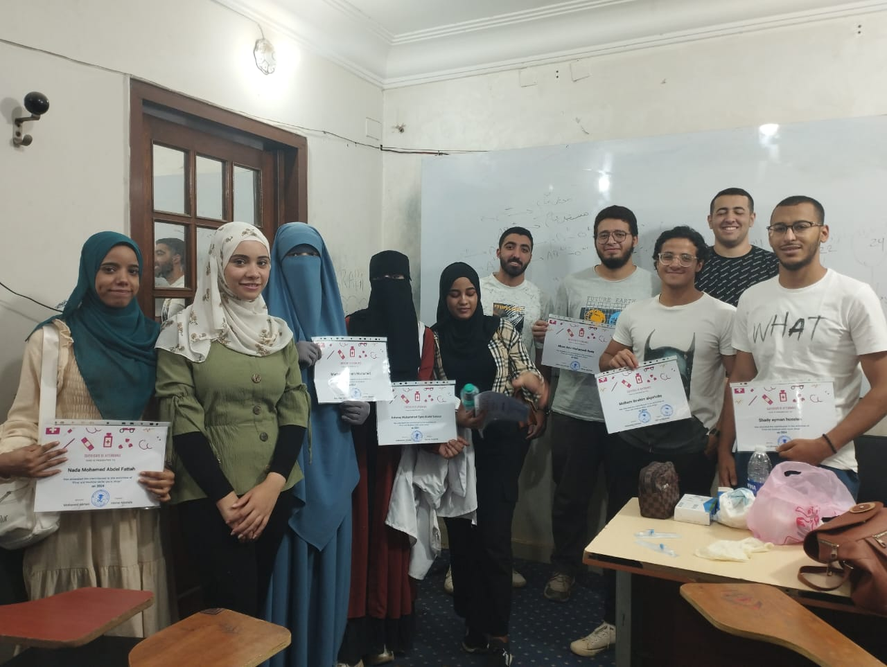
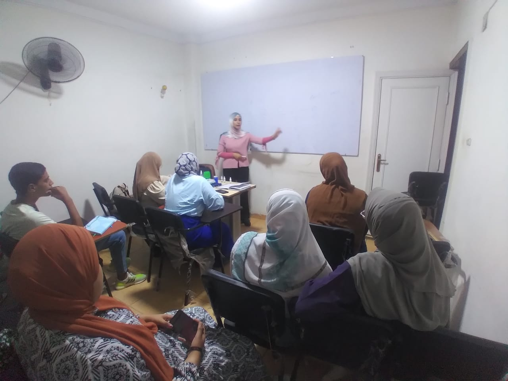

صور من الكورسات
الكورس معتمد من المركز الدولي للتدريب. هذه الشهادة معتمدة وموثقة بختم المركز الدولي للتدريب

المجموعة الأولى
خريجو دورة الإسعافات الأولية المعتمدة

المجموعة الثانية
متدربون في برنامج المهارات الطبية

المجموعة الثالثة
تدريب عملي على الإنعاش القلبي الرئوي